WORKING WITH DATABREW RECIPES AND PROJECTS
5. Creating a DataBrew Project¶
While the previous dataset profile is running, do the following:
1. Click the PROJECTS icon on the left.
2. Click the Create project button in the middle.
3. Under Project details set Project name to TopCustomers-PerBand.
4. Scroll down to Select a dataset, make sure the option My datasets is selected and then choose the IncomeBand dataset.
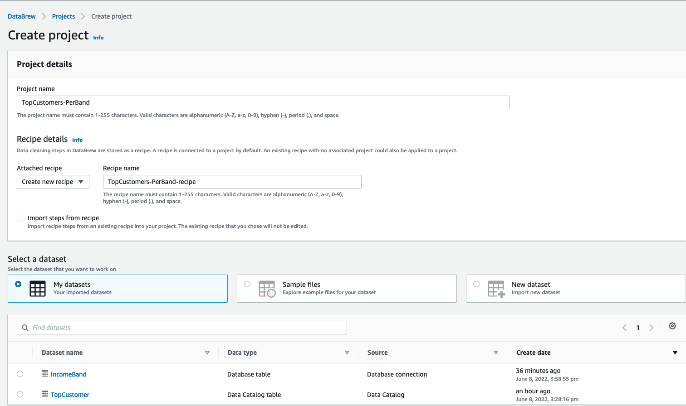
5. Scroll to Permission, select AWSGlueDataBrewServiceRole-etl-ttt-demo for Role name. Then, click on the Create project button at the bottom of the page.
Once a project session is initiated, it may take couple of minutes for the session to become fully ready and operational. Wait for the following screen to complete loading:
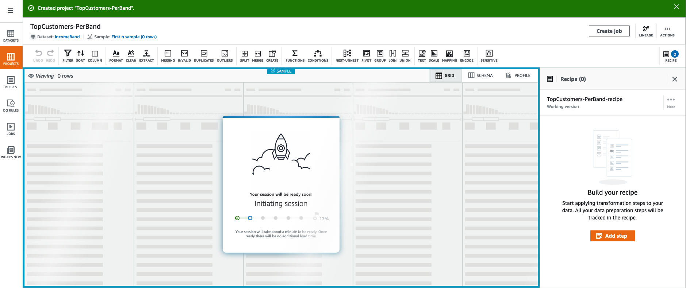
Once the project is fully ready, you will be presented with an spreedsheet-like view with multiple shortcut buttons at the top. The data you see there are the first 20 rows (default) of the IncomeBand dataset. Take your time to explore the shortcuts and the interface of DataBrew's project view.
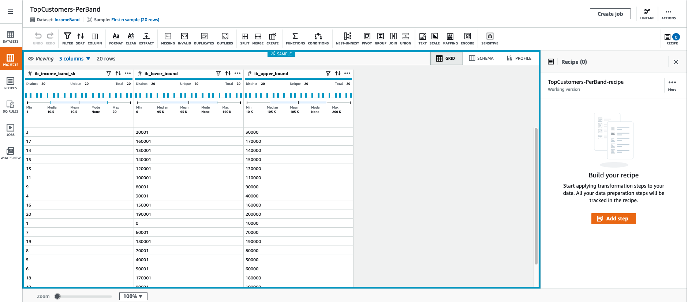
6. Adding steps to a project¶
To start building a recipe, you first need to add steps to it. Let's manually add a first step to our project:
1. On the top list of shortcuts, choose JOIN.
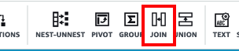
1. In the next screen, under Select dataset, select TopCustomer from the dropdown list and click Next
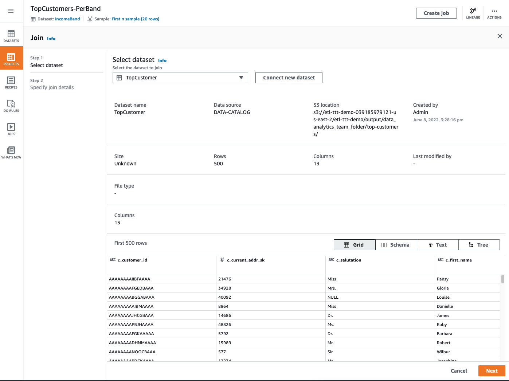
1. In the next screen, choose a Right Join under Select join type. Then do the following:
- Under Table A (IncomeBand), choose ib_income_band_sk
- Under Table B (TopCustomer), choose ib_range_id
- Under Column List, uncheck the column ib_income_band_sk of source table Table A
Your screen should look like this:
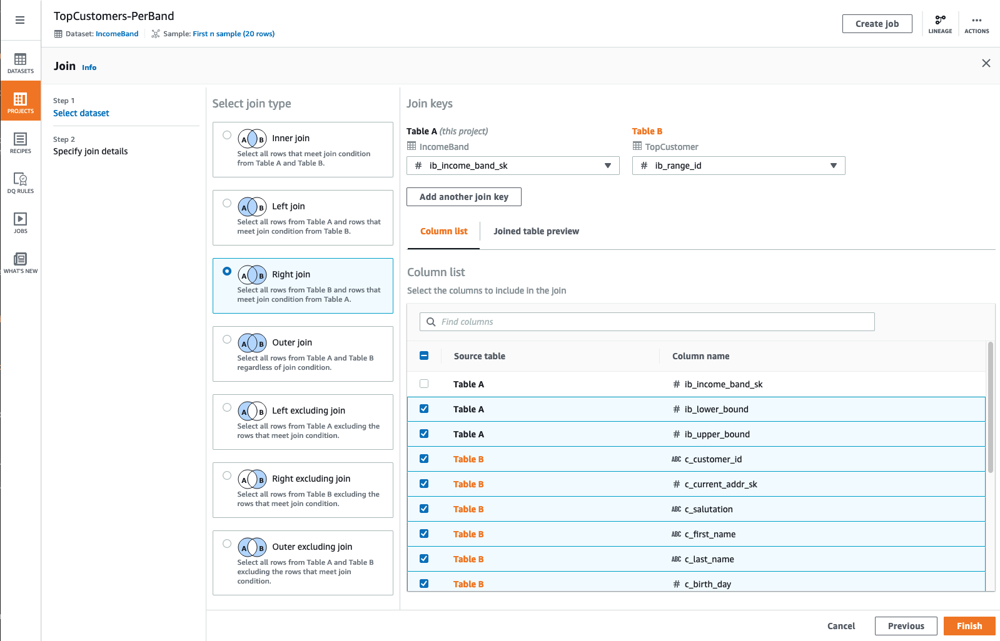
After adding this first JOIN step you can now see the results of a Right Join between IncomeBand dataset and TopCustomer dataset in which the columns ib_income_band_sk and ib_range_id were used as the JOINing columns.
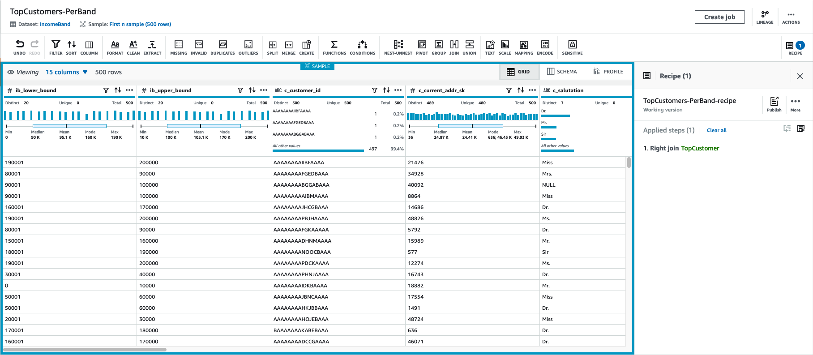
If you recall, the ib_range_id column was added as part of the Machine Learning lab. Essentially, the idea was to randomly assign to every customer an Income Band ID (ib_range_id) which would fall under a specific upper/lower bound range.
6. Sharing, Managing & Building up Recipes¶
Now that you have manually added a step that joins both datasets, let's leverage an already-made Recipe to automatically add the rest of the steps. Run the following code to download the Recipe.
mkdir -p /tmp/dsd/databrew-recipe/
aws s3 cp s3://ee-assets-prod-${AWS_REGION}/modules/31e125cc66e9400c9244049b3b243c38/v1/downloads/etl-ttt-workshop/databrew/TopCustomers-PerBand-recipe.json /tmp/dsd/databrew-recipe/TopCustomers-PerBand-recipe.json
aws s3 cp --recursive /tmp/dsd/databrew-recipe/ s3://$BUCKET_NAME/etl-ttt-demo/databrew-recipe/
Go to your S3 Bucket and navigate to: s3://\$BUCKET_NAME/etl-ttt-demo/databrew-recipe/. Download the file named: TopCustomers-PerBand-recipe.json. (Keep this file in a known location in your computer.)
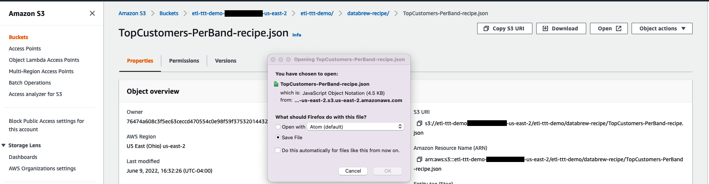
The idea is to simulate the situation where someone else in your team has already worked on the necessary steps to prepare this particular data and it is now sharing this with you. By sharing recipes you are encouraging work reusability and speeding up team's productivity.
Now, do the following to Upload a Recipe to your Glue DataBrew's Recipe enviroment:
1. Click the RECIPES icon on the left.
2. Click on the Upload recipe button in the far right.
3. Enter a Recipe name such as: team-shared-recipe. Then add a description too: Recipe shared from my org's data analyst team - Note: Not the final version!.
4. Click on the Choose File button, navigate to where you downloaded the recipe file TopCustomers-PerBand-recipe.json in your computer and upload it.
5. Click on the Create and publish recipe button at the bottom to complete the Recipe's uploading and publishing process.
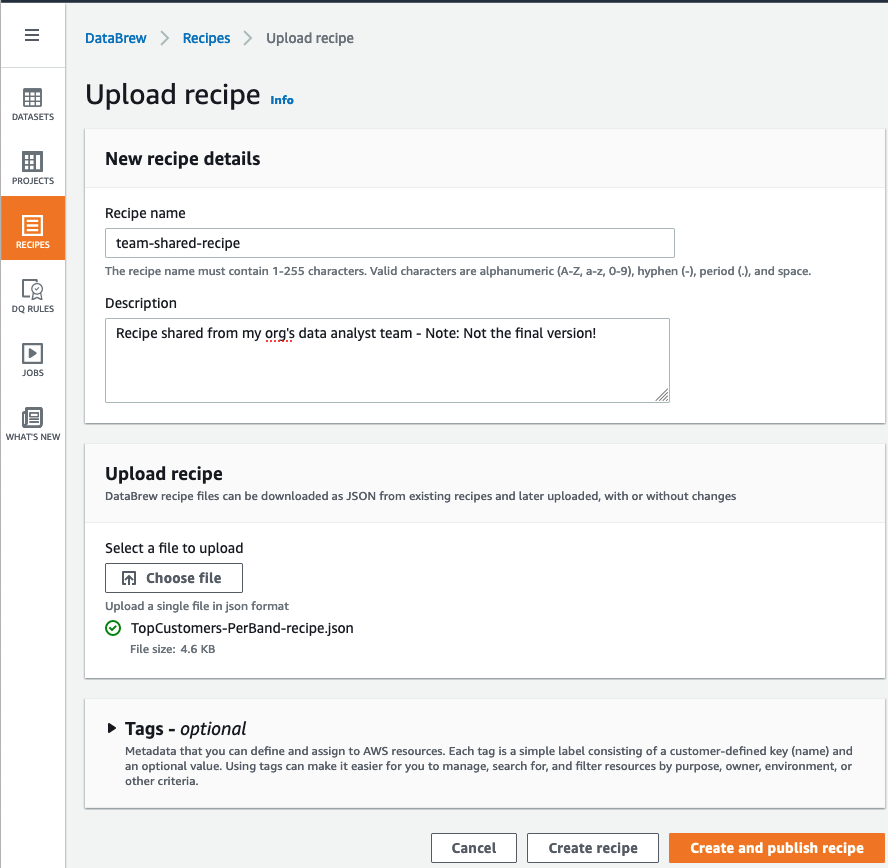
Once the recipe has been uploaded and publish you can now leverage it into your project. To do so:
6. Click back on the PROJECTS icon on the left and reonpen your project TopCustomers-PerBand.
7. On the far right of your screen, look for a 3-dot icon (...) labeled More, then click on Import recipe.
(If you can't find it, click on the icon RECIPE in the far top right of the page to expand the recipe panel) 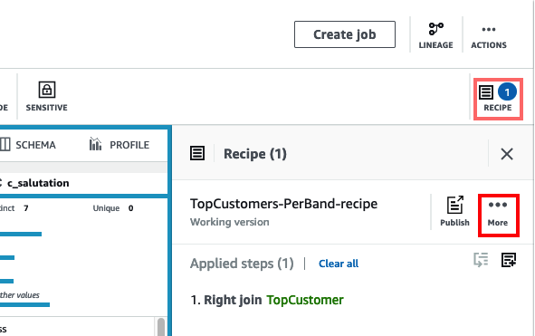
8. On the pop-up screen, check the team-shared-receipt and click Next.
9. On the next page, keep Append selected and click Next again to start validating each step within this recipe.
There will be 22 steps to be validated. Just allow for the validation process to complete and you should see all the 22 steps greening out like the following picture:
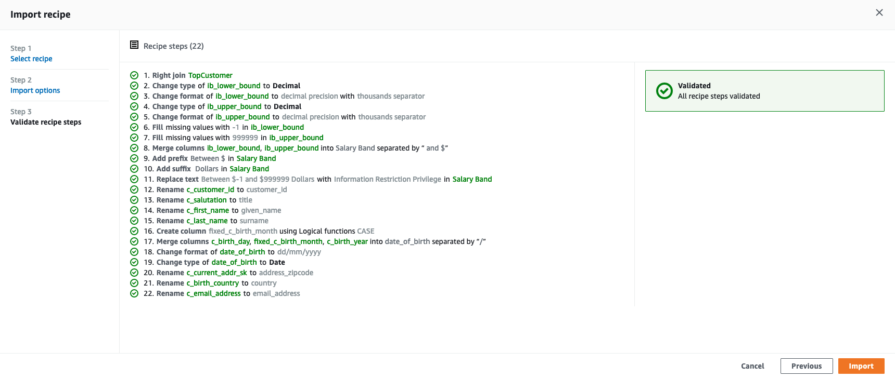
10. Click on the Import button to finish the import and append all the recipe's steps to your current project's recipe.
After importing all the steps, you should notice that the data representation will change accordingly and you will see the following changes:
- The columns ib_lower_bound and ib_upper_bound has been changed to Decimal (with a thousand separator) and they turned into a combined single column named Salary Band
- Some columns were renamed (mostly, the c_ portion of them was removed despite other changes in their names)
- A new column (with a date format/type) named date_of_birth has been created (by merging c_birth_month, c_birth_day and c_birth_year)
To complete the data preparation, let's do few more things to this recipe:
11. First, lets reorder some steps. To do that click on the tiny icon that says Reorder Steps when you hover the mouse over it (near to where it says Applied steps(22) | Clear all )
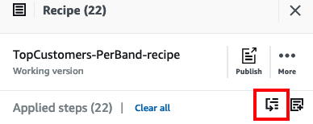
12. A pop-up windown will appear. There, click and hold the tiny 6 dot icon in front of the number 20 (Step 20) and move it up to after the step 15. Repeat this process for steps 21 and 22. Once done, your scree should look like the following:
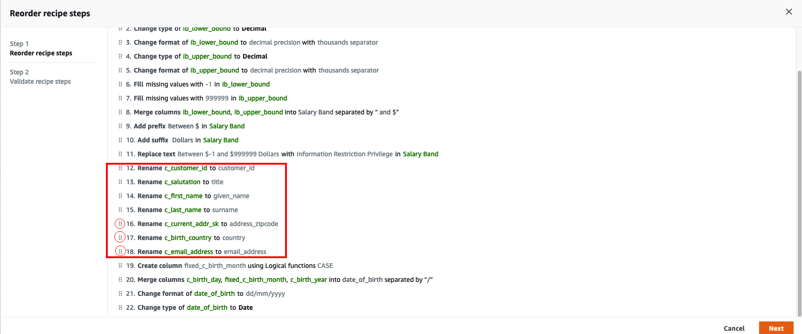
13. Click Next to re-validate the steps then Done to apply this reorder operation to the recipe.
Now, let's create an Age column using a function called DATEDIFF. This function calculates the difference between two dates and return a value that can be expressed in Days, Months, Years, etc. In this case, let's express it as Year in order to have the actual age of a person in a column.
15. Click on the tiny icon that says Add Step when you hover the mouse over it (near to Reorder Steps you justed clicked in step 11). In the search box that appear that says "Find Steps" type: DATEDIFF and select it from the dropdown list.
13. You must now define the entries for this function. Do the following:
- For Value 1 you should select the option Select source column and choose the column date_of_birth
- For Value 2 you should keep Enter custome value and select today's date in the calendar.
- Choose Unit as Years
- Type
Agein the Destination Column field
See the picture below for reference:
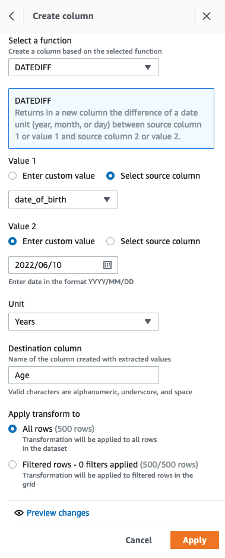
13. Click Apply to apply the changes.
13. Now, you can drop the unecessary columns. On the shortcut bar, click on the fifth icon that says COLUMN then choose Delete.
13. A new step window will appear to the left. On the Source columns drop down choose:
- date_of_birth
- c_birth__month
- c_login
- match_id
- ib_range_id
13. Click Apply for the last time.
13. Finally, click on the icon Publish (above the Add Steps and Reoder Steps icons. Write a meaningful description to your recipe such as This is the final recipe! and click Publish.
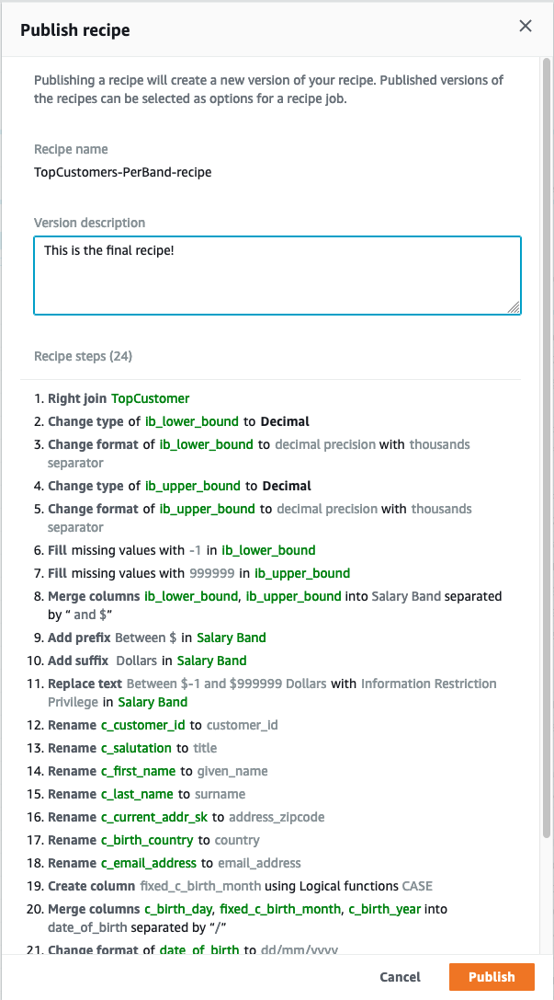
You have now fully prepared your dataset and created a new recipe with combines steps that have been shared with you and steps added by yourself. Now, you are ready to operationalize all these steps in your recipe into a Glue DataBrew job.